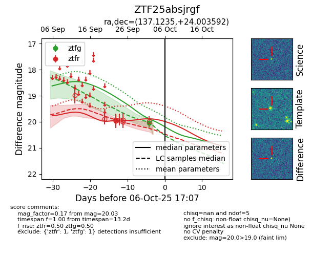
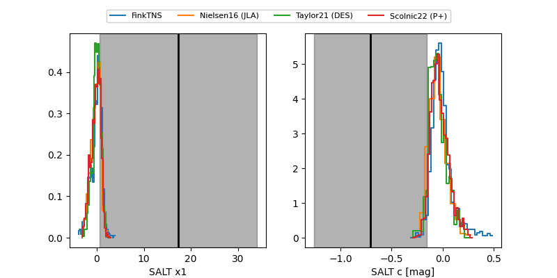

FINK: ZTF25absjrgf
Lasair: ZTF25absjrgf
ALeRCE: ZTF25absjrgf
ZTF25absjrgf (ztf,fink)
equatorial (ra, dec) = (137.1235,+24.00359)
galactic (l, b) = (203.3448,+40.03303)


last ztfg=20.03, ztfr=19.93
1 ztfg, 1 ztfr detections